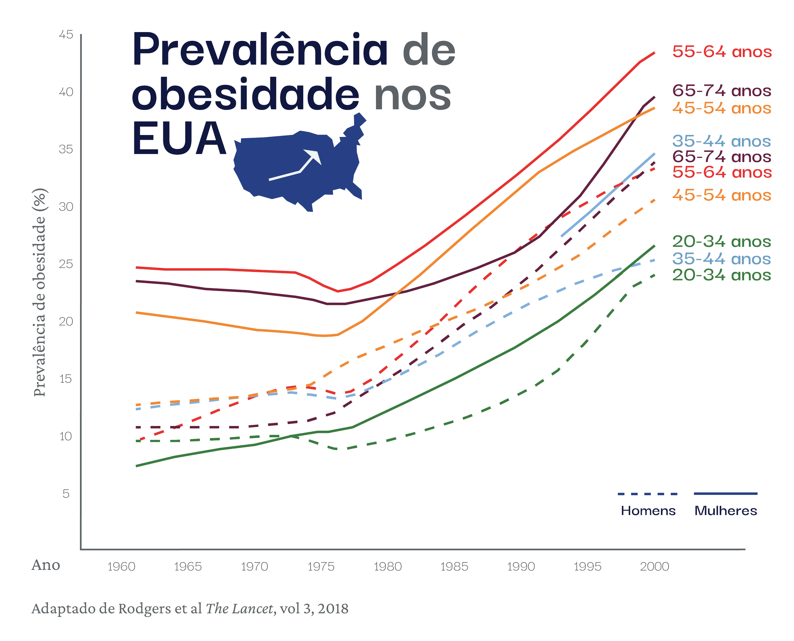

🌐 Outcome: Launched Website
I collaborated with a research team to
transform a study on Brazil’s
obesity epidemic into an accessible,
narrative-driven website.
The goal was
to simplify complex data for the general public
while providing actionable insights for
policymakers.
My role was designing clear, engaging visuals and supporting front-end development to ensure a user-friendly experience.
📒 Click here for the project overview!
Continue reading for the detailed case study.
This project originated as a research study on Brazil's obesity epidemic and the increasing prevalence of noncommunicable diseases—a growing public health concern.
Our challenge was twofold: to create a tool enabling
stakeholders to access data effectively while
simplifying the complexity of the obesity crisis for
the general public.
To address this, we transformed the
scientific paper into an accessible
website.
We worked closely with the client through collaborative exercises—including card sorting—to define the narrative structure of the project. While the original research paper focused heavily on the link between obesity and non-communicable diseases, we reframed the story to position obesity as a widespread epidemic with systemic causes, rather than individual failings.
This shift allowed us to explore shared risk factors across the population, making the issue feel more solvable and less stigmatizing. It also gave policy makers a clearer lens for proposing legislative changes that could lower long-term healthcare costs.
🔑 Key Learning:
Frame the narrative as a systemic problem rather
than blaming individuals.

Initial co-creation meetings with client.
Simplicity was our guiding principle. Working remotely across three time zones and under tight deadlines, we prioritized clarity, focus, and efficiency in both design and collaboration.
After evaluating several options, we chose a website instead of a dashboard. This approach allowed to share the project with a larger audience. We decided to include a link to the data tools to let policy makers access that part of page directly.
We adopted a desktop-first strategy, as our primary audience was policy makers working on computers. To manage expectations, we added a clear banner encouraging mobile users to view the site on desktop for the best experience.
👩🏽🎨 Design decision:
Provide a quick link to data tools so policy makers
can access them faster.
We began by collecting a wide range of inspiration sources—from websites and editorial illustrations to public health reports and official government guidelines. To reflect the cultural context, we also drew visual references from Brazilian artists, ensuring the design remained grounded in the identity of both the research and its intended audience.
As we explored different storytelling formats, we aligned on a single-page scrollytelling approach. This allowed us to deliver a visually engaging narrative about the obesity epidemic while maintaining intuitive navigation for stakeholders who needed to access specific data points quickly.
The goal was to create a visual style that felt friendly, inviting, and distinct. To reflect the diversity of Brazil’s population, I focused on abstract shapes and bright, saturated colors that brought energy to the overall tone.
Initially, we explored rounded design elements, but they felt too familiar and lacked visual impact. To push the direction further, we proposed irregular, asymmetrical shapes that added rhythm and personality to the layout.
We presented two visual styles with three different color palettes. After client review and discussion, we aligned on a bold palette and asymmetrical forms (B2, see below) —a choice that gave the project a vibrant, unique identity while staying rooted in accessibility and clarity.
Visuals were not just decorative—they were integrated directly into the UI, serving both functional and storytelling roles. Throughout the process, cultural sensitivity remained important: the team advised against using Brazilian flag colors in clothing illustrations to avoid unintended political associations—an important consideration I appreciated as the only non-Brazilian on the project.
🔑 Key feedback:
Be mindful of the use of color to avoid political
connotations.
The color palette was carefully refined to support clarity in data visualizations. Since many charts condensed large datasets into a single view, we prioritized high contrast and visual differentiation to make key patterns immediately legible.
#12173E
#2C3F81
#8BB0D9
#4A7B47
#F4C660
#E68E46
#D84339
#5C253F
0 1 2 3 4 5 6 7 8 9
Typography is the voice of your brand.
0 1 2 3 4 5 6 7 8 9
Design is crafted for clarity, built with purpose.
We explored color combinations and textural overlays to give the visuals a tangible, handcrafted quality. To represent people, I developed two illustration approaches: detailed figures for individuals and simplified, abstract shapes for groups. This dual system balanced emotional depth with narrative clarity.

To reinforce the project’s identity, I wove brand elements into even the most minimal visualizations. For example, in a chart illustrating obesity trends in the U.S., I added a country silhouette paired with an upward-pointing arrow to echo the rising data trend. These subtle illustrative cues in graph titles acted as visual summaries, helping readers interpret key insights at a glance while maintaining narrative cohesion.
The website was built on GitHub and structured into seven sections, featuring a total of eleven data visualizations. Each section was supported by additional visuals that helped explain key concepts without relying solely on text, reinforcing accessibility and comprehension.
We placed strong emphasis on interactivity to encourage user engagement. Features included scroll-triggered animations, click-to-highlight graphics, and filterable data maps—all designed to promote active exploration rather than passive consumption of information.
During implementation, I supported with front-end contributions. I helped build the navigation draft, structured content using HTML and CSS, and handled various updates directly within GitHub to streamline the design-to-development process.
All users could scroll and see the animations change as they accompanied the story.

Users who wanted to learn more about processed foods could click to filter and explore.

Policymakers could filter information by impact, helping them establish appropriate measures based on the severity of the epidemic in their state.
We built the website on GitHub and periodically presented it to the client for feedback. The website was divided into 7 sections with 11 data visualizations. Each sep>ction included additional visuals to explain concepts without relying on words.
The team placed special emphasis on interactive elements to encourage users to explore the information. Features included simple animations during scrolling, click-to-highlight graphics, and filterable data maps. Our goal was to promote active engagement with the material rather than passive scrolling.
During the implementation of the website I supported the team with front-end code. I helped developing the draft version of the navigation system, setting up classes in CSS, adding HTML content and making small updates in Github.
🖥️ Website
7 sections + 11 data
visualizations
📊 Visualizations
Illustrations,
Animations, Data Visualizations, Iconography
🔑 Key Learning
Let the user explore
the information
The website’s welcome is a critical touchpoint, as it determines whether users continue exploring or leave the site. The team recognized that this section needed to:
Provide an overview of the project
Allow direct access to the data tool
Introduce the scrolling functionality
Initial sketches featured illustrations of individuals and food, but they lacked a strong connection to the accompanying text. To address this, I developed a concept using abstract shapes to represent 100 individuals, with color coding to show how obesity prevalence increased over time. This design allowed users to quickly understand the severity of the issue and frame it as a major public health concern.
The team was able to successfully deliver the final product in a span of a few weeks. Professor Leandro’s team received:
If the team had more time we would have loved to make website mobile friendly, add more animations and develop an online marketing campaign.
🎯 Deliverables
Interactive website
Data tools for policy makers
Project
identity
Brand materials and assets
☀️ Wrap up
Personal lessons
This project taught me a lot of new things. It
allowed me to try new techniques and
materials and come up with a new visual
style. It also motivated me to improve my
Portuguese to better communicate with the
client and engage with my team on a different level.
I also learned a lot about the
obesity epidemic how for a long time,
obesity has been
blamed individual choices. However, when it is understood as an
epidemic, we can observe trends and patterns
that will allow us to properly take care of a
population’s health.